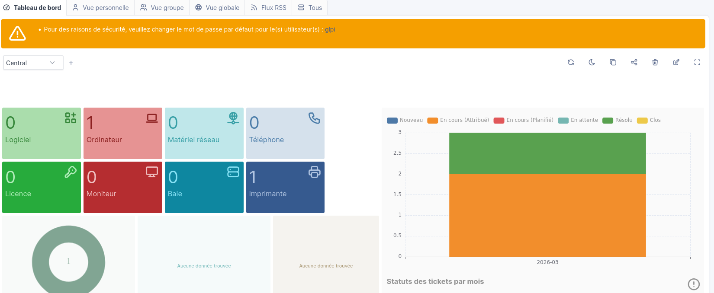
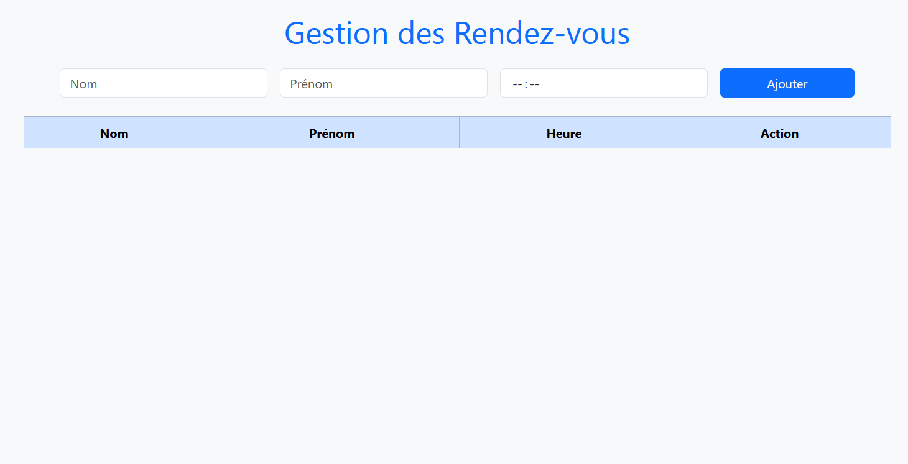
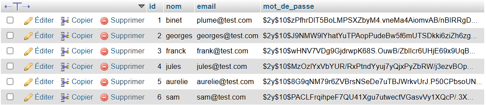
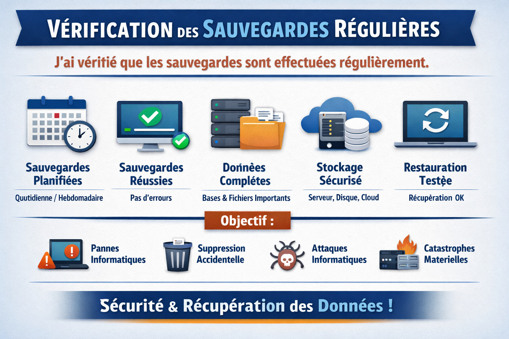
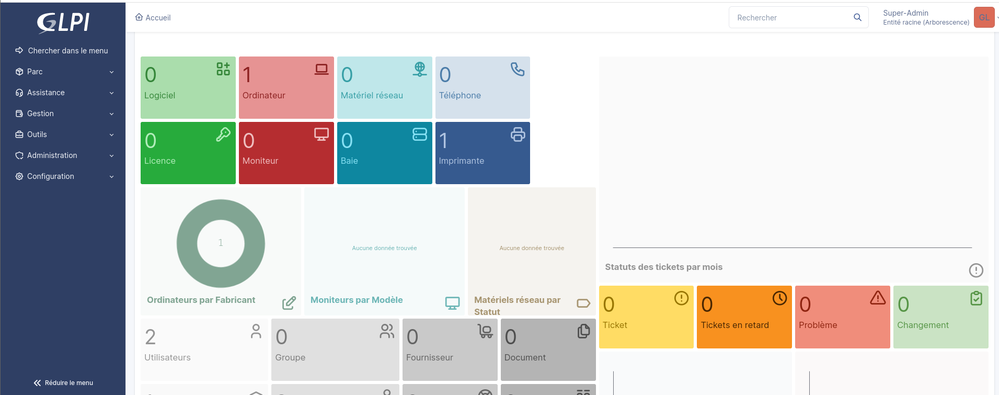
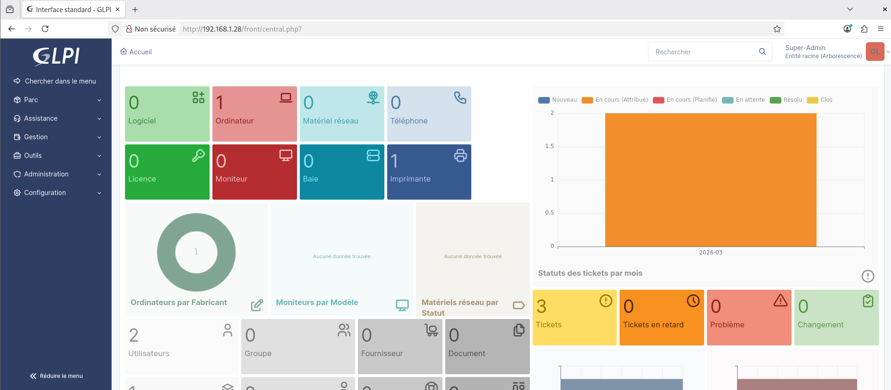
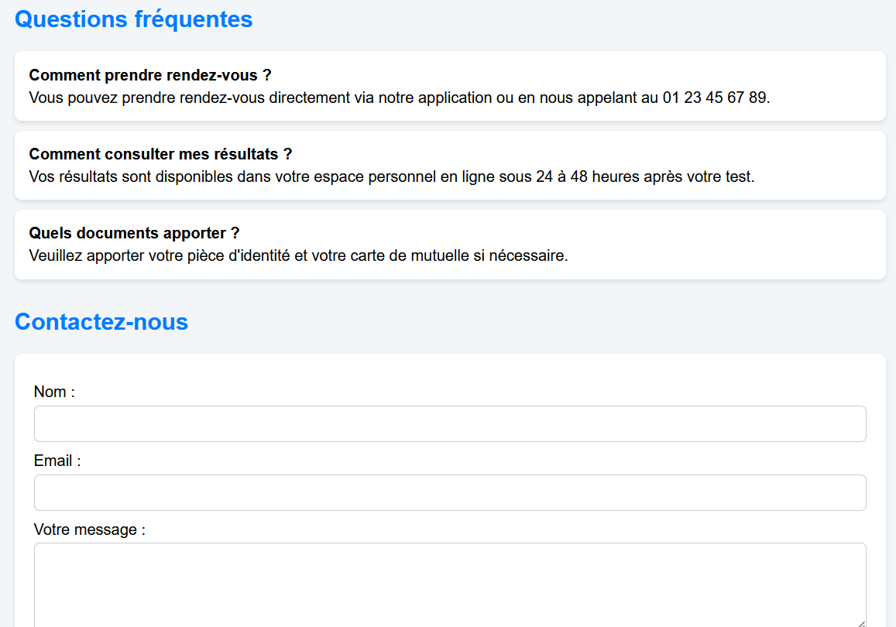
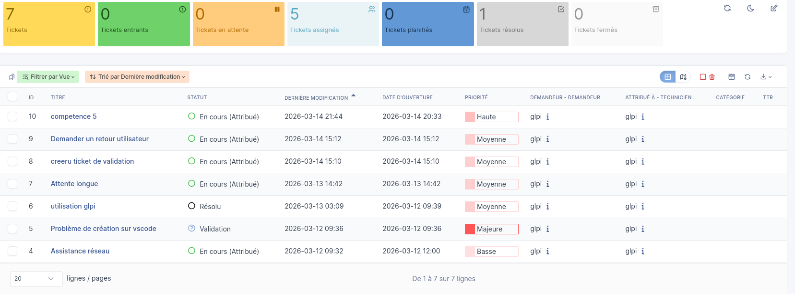
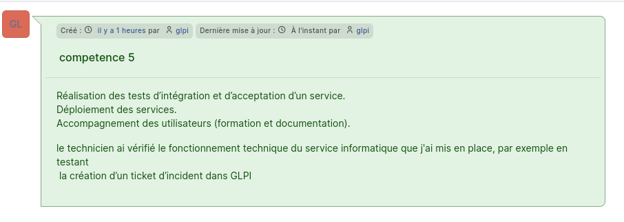
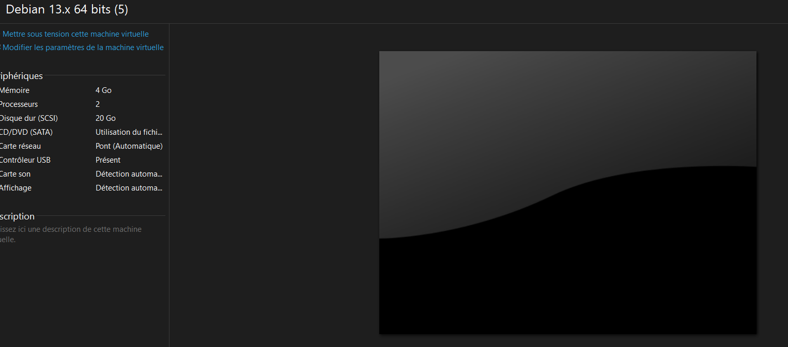

AURELIE BINET
PORTFOLIO SLAM
Compétence n°01 : Gérer le patrimoine informatique
-
J'ai utilisé GLPI pour recenser et identifier les ressources numériques de mon organisation.

-
J'ai exploité des référentiels, normes et standards adoptés par le prestataire informatique :
- ITIL (révolution numérique)
- RGPD (protection des données)
- ISO 27001 (sécurité de l'information)
-
Dans le cadre de la gestion des accès, j’ai identifié les différentes ressources du service.
Applications : Les applications sont les logiciels utilisés pour travailler, par exemple notre application de gestion des rendez-vous.

Fichiers : Les fichiers sont les documents stockés, comme les PDF ou Excel des comptes rendus médicaux.

Bases de données : Bases de données structurées, comme MySQL pour les rendez-vous et dossiers patients.

-
J'ai vérifié les sauvegardes :
Je me suis assurée que les sauvegardes soient réalisées correctement et régulièrement.

-
J'ai vérifié le respect des règles d’utilisation des ressources numériques :
- Données et informations (bases, fichiers, documents) → tout ce que l’entreprise stocke et traite.
- Logiciels et applications métiers → outils spécifiques utilisés pour les activités de l’organisation.
- Matériel informatique et réseaux → serveurs, ordinateurs, périphériques, infrastructures réseau.
- Comptes et droits d’accès des utilisateurs → gestion des identités et des permissions pour sécuriser l’accès aux ressources.
Compétence n°02 : Répondre aux incidents et demandes d’assistance
- J'ai collecté, suivi et orienté les demandes : j'ai utilisé GLPI pour collecter, suivre et orienter les demandes d'assistance.
- J'ai traité des demandes concernant les services réseau et système, applicatifs: j'ai utilisé GLPI pour traiter les demandes d'assistance liées aux services réseau et système.
- J'ai utilisé GLPI pour traiter les demandes d'assistance liées aux applications et proposer des solutions.



Compétence n°03 : Développer la présence en ligne de l'organisation
- J'ai participé à la valorisation de l'image de l'organisation sur les médias numériques en tenant compte du cadre juridique et économique (RGPD).
- J'ai référencé les services en ligne et mesuré leur visibilité (SEO).
- J'ai contribué à l’évolution d’un site web exploitant les données de l'organisation.
Compétence n°04 : Travailler en mode projet
- Analyser les objectifs et l'organisation d'un projet.
-
J'ai permis l’inscription et la connexion des patients.

- J'ai géré un calendrier interactif des rendez-vous.
-
j'ai centralisé les comptes rendus médicaux.
-
J'ai fourni une aide santé personnalisée.

Exemple de tableau de bord
Évaluer les indicateurs de suivi et analyser les écarts : tableaux de bord pour suivre l'avancement du projet.
Compétence n°05 : Mettre à disposition des utilisateurs un service informatique
- Réalisation des tests d’intégration et d’acceptation d’un service.
- Déploiement des services.
- Accompagnement des utilisateurs (formation et documentation).
Dans le cadre de mon projet, j’ai mis en place une solution de gestion des incidents informatiques avec GLPI. Ce service permet aux utilisateurs de déclarer des incidents informatiques et aux techniciens de gérer les demandes d’assistance.

J’ai vérifié le fonctionnement technique du service informatique en testant la création d’un ticket d’incident dans GLPI et en vérifiant que les notifications fonctionnent correctement pour les techniciens. Ces tests servent à vérifier si le service répond aux besoins des utilisateurs.
Création d’un ticket d’incident dans GLPI :


```Compétence n°06 : Organiser son développement personnel
Dans le cadre de mon développement personnel, j'ai mis en place un environnement de virtualisation avec VMware. Cela m’a permis de créer des machines virtuelles pour tester différentes configurations en toute sécurité. Chaque machine virtuelle possède son propre système d’exploitation et fonctionne de manière isolée du système hôte.

J’effectue également une veille technologique afin de rester informée des évolutions dans le domaine de l’informatique. Pour cela, j’utilise des outils tels que Feedly, GitHub et LinkedIn pour suivre les nouvelles technologies, les mises à jour logicielles et les bonnes pratiques. Cette veille me permet d’enrichir mes compétences et de rester à jour dans un domaine en constante évolution.
``````